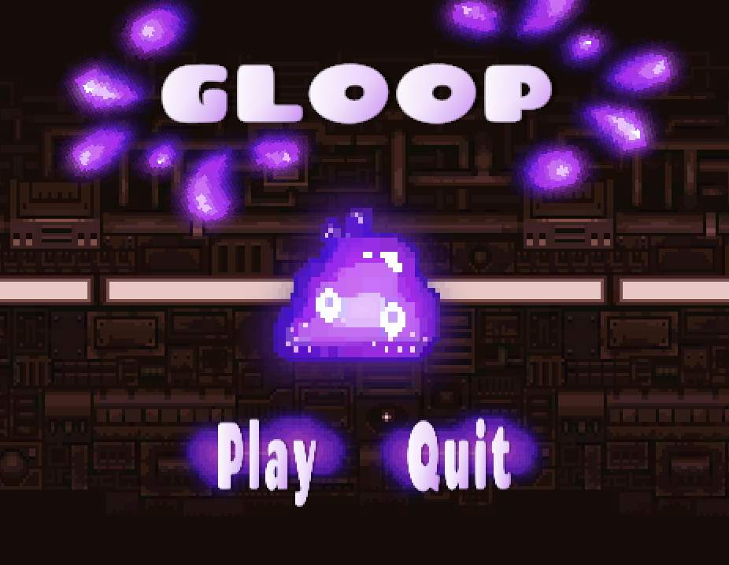
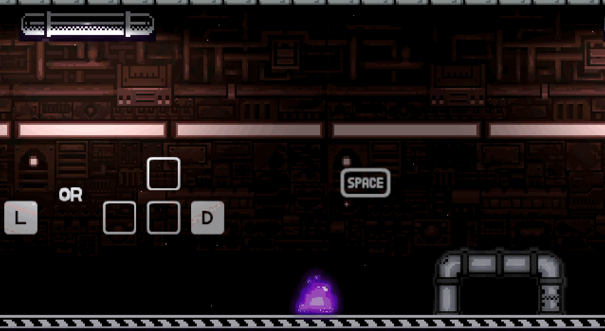
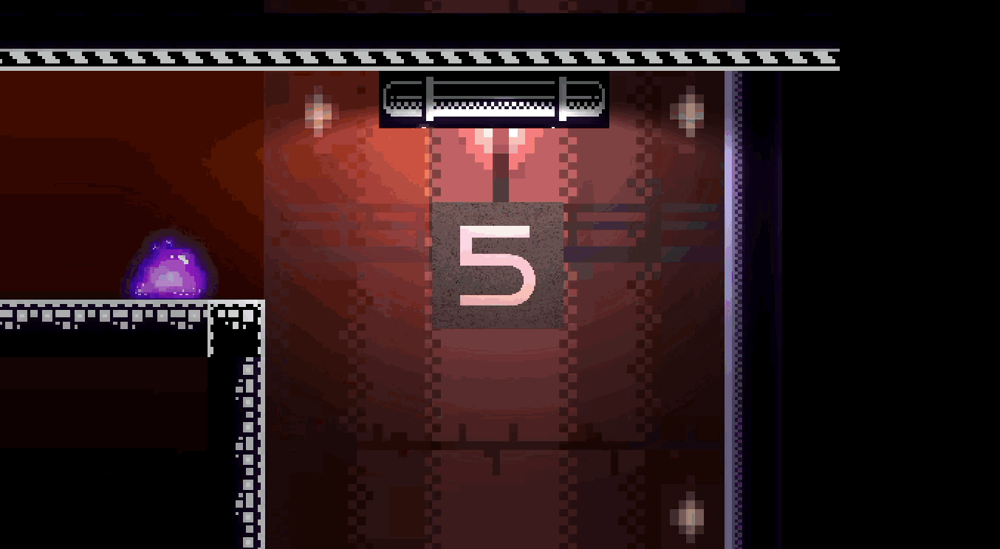
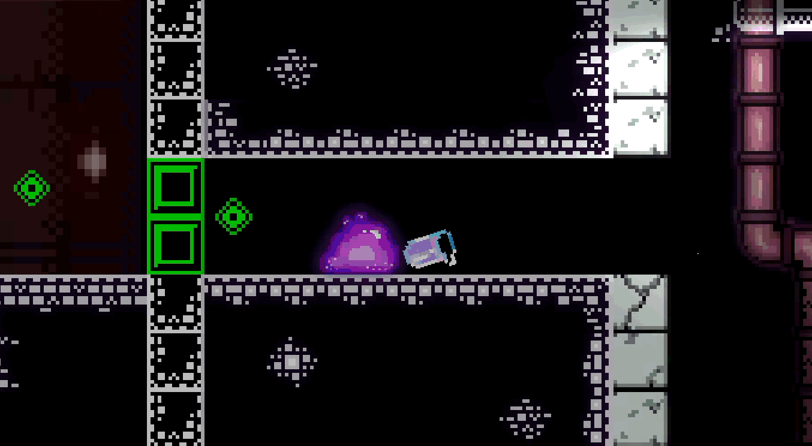
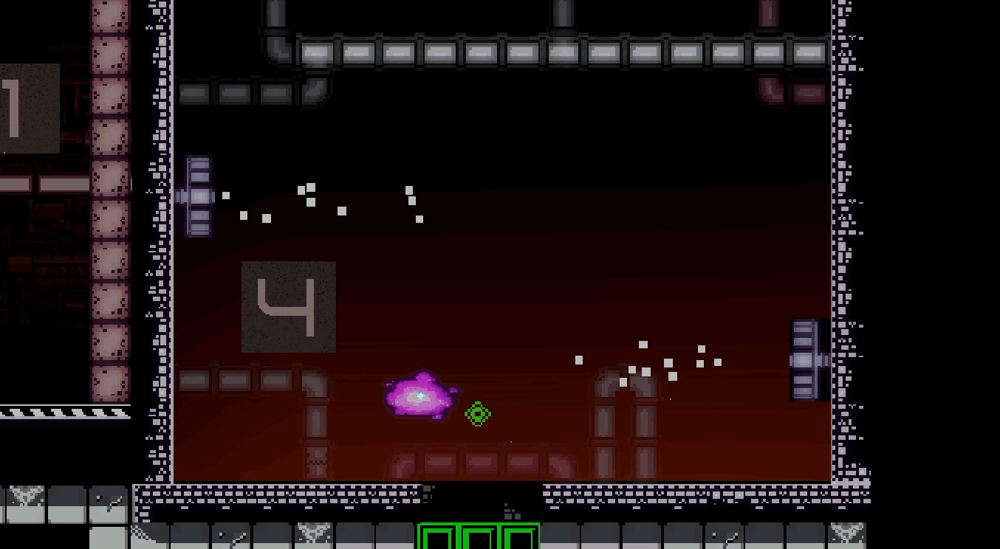
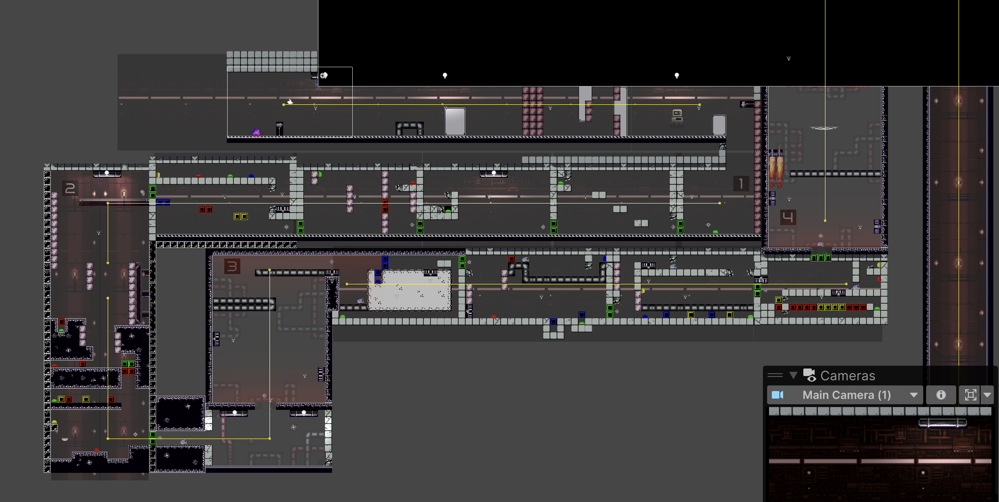

Gloop
Partners: Hamzah Ali, Joshua Ma, Zohra Younus
Tools: Unity, C#, Adobe Premiere Pro, Adobe Photoshop, Procreate
When an experimental facility is shut down, a brave test subject traverses the lab to reunite with his love.
For this project, I took the lead on storybuilding, animations, aesthetics, and character design. Check out my contributions below!
A Sneak Peek
I edited our trailer in Adobe Premiere Pro.
Welcome to Gloop!
I created all of the sprites for the title screen, except for the background. The backsplash is a free assets that I altered.

Meet Gloop: The Character
I drew our main character in Photoshop! Using C#, I also gave him his characteristic jiggle, as well as his blinking eye animation.

The Story
I drew two sets of sprites for an intro and an outro cutscene. I created these animations with Unity's very own animator!
I also implemented the fade in and fade out logic to go along with these scenes.

Storyseeds
To keep storytelling alive during gameplay, I added this interactive element:
--I created the retro computer animation with free assets.
--I then developed the code to play the "Secret File Reveal"
--The file was designed and animated by me.

Gloop's Transformation
--I implemented the early code for Gloop's gas state, which originally turned off gravity and only allowed players to move left and right.
--I created the gas transformation explosion animation with free, altered sprites.
--I also drew Gloop's gaseous form in Photoshop.

Gas Levels/Puzzles
I contributed two gas puzzles to our map/level design.
--I created the fire animations using free assets.
--I also animated and coded the two beetle enemies in the second level, again using free sprites which I altered in Photoshop.


The World a.k.a Map
Beyond contributing these levels, I was also responsible with the look of our map. This entailed...
--Either drawing original assets or selecting and altering free tilesets.
--Adding backgrounds
--Creating special effects, such as the dust particle effect found throughout nearly all the rooms.
